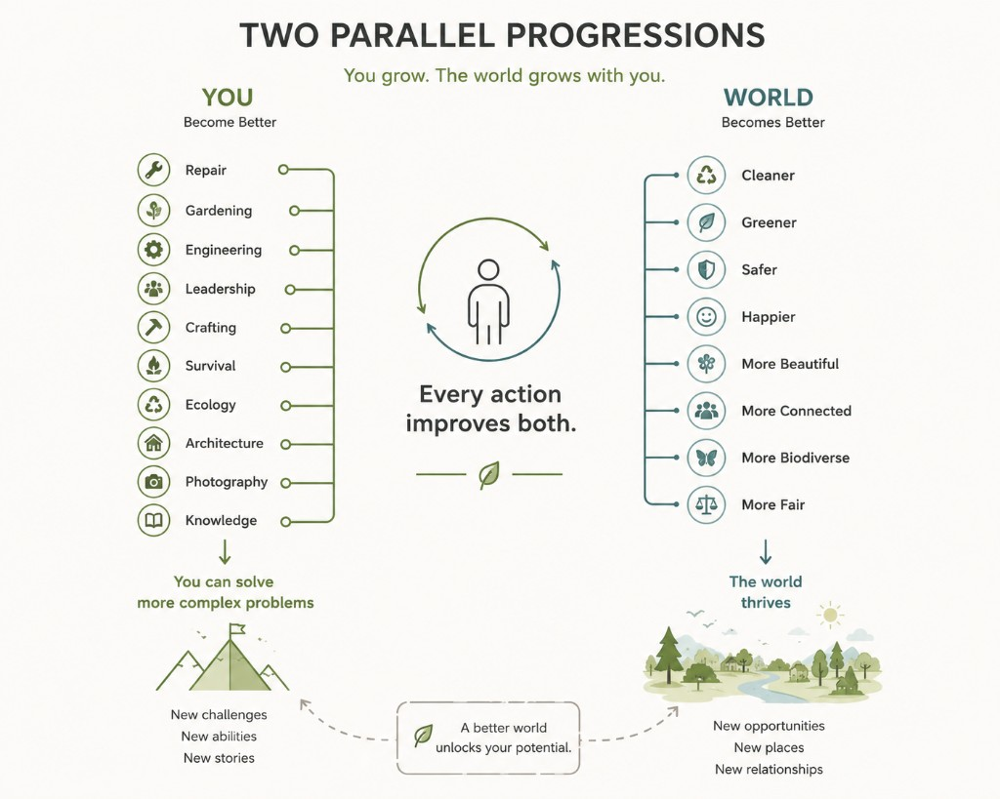

Player fantasy
“I don’t just level up — I gradually return life to a damaged world and see the consequences of my actions.”
Personal Product Vision · Long-term Concepts
Concepts for interactive worlds, systems, and long-term world building — from environmental gamification to a restoration game I’m designing and learning to build.
Working title TBD. Core idea is fixed: the player explores and restores a world damaged by destruction, neglect, or injustice — and sees that their actions change the world, not only their character.

“I don’t just level up — I gradually return life to a damaged world and see the consequences of my actions.”
Progression must feel real: visible consequences in the environment, not only stats on a character sheet.
Character progression: new abilities, tools, and ways to interact — so you can solve harder problems.
→ New challenges · New abilities · New stories
World progression: the map and communities change because of the player — cleaner, safer, more alive.
→ New opportunities · New places · New relationships
Player loop
Explore → Encounter problem → Act → Reward → Improve → Explore new areas
World loop (differentiator)
Player action → World changes → New world state → New exploration possibilities
Explore → Complete activities → Gain resources → Develop character → Unlock abilities & areas → Restore world → Repeat
Player actions → World restoration → New world state → New areas / NPCs / activities / stories → More reasons to explore
ProductStar Unreal Engine program — building toward a vertical slice of the restoration game.
A01 — project setup in UE5RestorationGame UE projectOpen design questions — not locked yet.